Press to toggle code
pacman::p_load(sf, tidyverse, spdep, tmap)Spatial autocorrelation is the term used to describe the presence of systematic spatial variation in a variable and positive spatial autocorrelation, which is most often encountered in practical situations, is the tendency for areas or sites that are close together to have similar values.
This exercise aims to teach us how to compute for Global and Local Measures of Spatial Autocorrelation (GLSA) using R. Specifically, we are taught to compute for the global and local Maron’s I and Greary’s C. As a by-product, we also learn to simulate with Monte Carlo simulation, to examine patterns of autocorrelation, to detect cold/hot spots using \(G_i\) statistics and tp visualize the analysis output.
The two datasets to be used in this exercise are:
Hunan (shapefile) - geospatial data on Hunan province’s county-level boundaries
Hunan_2012 (CSV) - attribute data containing Hunan’s local development indicators for 2012
Using the data above, we are tasked to determine the spatial patterns of selected development indicators in Hunan, China.
As done in In-class Exercise 1, we load the necessary packages as shown below.
pacman::p_load(sf, tidyverse, spdep, tmap)hunan <- st_read(dsn = "data/geospatial", layer = "Hunan")Reading layer `Hunan' from data source
`C:\acapgalano\ISSS624\Hands-on_Ex\Hands-on_Ex2\data\geospatial'
using driver `ESRI Shapefile'
Simple feature collection with 88 features and 7 fields
Geometry type: POLYGON
Dimension: XY
Bounding box: xmin: 108.7831 ymin: 24.6342 xmax: 114.2544 ymax: 30.12812
Geodetic CRS: WGS 84hunan2012 <- read_csv("data/aspatial/Hunan_2012.csv")Rows: 88 Columns: 29
── Column specification ────────────────────────────────────────────────────────
Delimiter: ","
chr (2): County, City
dbl (27): avg_wage, deposite, FAI, Gov_Rev, Gov_Exp, GDP, GDPPC, GIO, Loan, ...
ℹ Use `spec()` to retrieve the full column specification for this data.
ℹ Specify the column types or set `show_col_types = FALSE` to quiet this message.hunan <- left_join(hunan, hunan2012) %>% select (1:4, 7,15)Joining, by = "County"NEW FUNCTION UNLOCKED: select()
This function is used to pick certain variables/features/columns of a DataFrame. In this case, we are choosing to keep the following: NAME_2, ID_3, NAME_3, ENGTYPE_3, County and GDPPC.
To get initially visualize the base of the data we are dealing with, we are going to prepare a basemap and a choropleth map showing the distribution of GDPPC for 2012 by using qtm() of tmap package.
equal <- tm_shape(hunan) + tm_fill("GDPPC", n = 5, style = "equal", palette = "RdPu") + tm_borders(alpha = 0.5) + tm_layout(main.title = "Equal interval classification",legend.text.size = 0.5, legend.title.size = 1)
quantile <- tm_shape(hunan) + tm_fill("GDPPC", n = 5, style = "quantile", palette = "RdPu") + tm_borders(alpha = 0.5) + tm_layout(main.title = "Equal quantile classification", legend.text.size = 0.5, legend.title.size = 1)
tmap_arrange(equal, quantile, asp=1,ncol=2)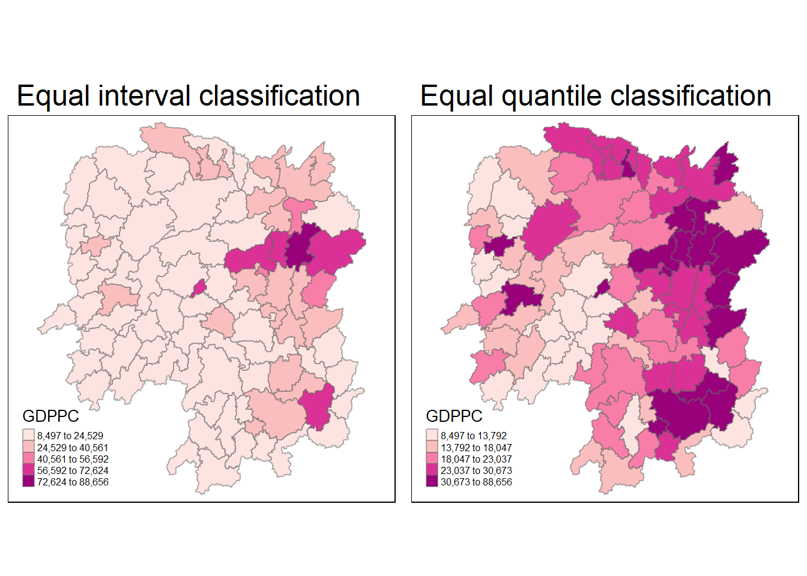
This shows a basic visualization of the distribution of GDPPC values with ranges divided equally or by quantile. But as we learned so far, this is not an accurate depiction since there spatial factors to consider.
Before we can compute the global spatial autocorrelation statistics, we need to construct spatial weights of the study area. The steps to do so were discussed in In-class Exercise 1.
Spatial weights are used to define the neighborhood relationships between the geographical units (in this case, by county) in the study area. Using contiguity means two spatial units that share a common border.
wm_q <- poly2nb(hunan, queen = TRUE)
summary(wm_q)Neighbour list object:
Number of regions: 88
Number of nonzero links: 448
Percentage nonzero weights: 5.785124
Average number of links: 5.090909
Link number distribution:
1 2 3 4 5 6 7 8 9 11
2 2 12 16 24 14 11 4 2 1
2 least connected regions:
30 65 with 1 link
1 most connected region:
85 with 11 linksThe function poly2nb() above creates the list of neighbors of each area unit. The summary report above shows that there are 88 area units in Hunan. The most connected area has 11 neighbor, while there are two area units with only one neighbor.
In a the previous exercise, we used the function nb2listw() to assign the weights to the neighbor list. The argument style sets mode of assigning the weights. For this case, setting it to “W” indicates equal weights of \(\dfrac{1}{|\{Neighbors\}|}\) assigned to neighboring area units then summing the weighted income values.
While row-standardization is the most intuitive way to summarize the neighbors’ values, it has the drawback of polygons along the edges of the study area will base their lagged values on fewer polygons thus potentially over- or under-estimating the true nature of the spatial autocorrelation in the data. For this example, style=“W” is used for simplicity but note that other more robust options are available, notably style=“B”.
“B” stands for basic binary encoding. It was used in the previous exercise.
rswm_q <- nb2listw(wm_q,style="W", zero.policy = TRUE)
rswm_qCharacteristics of weights list object:
Neighbour list object:
Number of regions: 88
Number of nonzero links: 448
Percentage nonzero weights: 5.785124
Average number of links: 5.090909
Weights style: W
Weights constants summary:
n nn S0 S1 S2
W 88 7744 88 37.86334 365.9147The package spdep provides a function moran.test() to simply perform Moran’s I statistics.
Moran’s I is a measure that describes how features differ from the values in the study area as a whole. It is defined as:
\[ I = \dfrac{N}{W}\dfrac{\displaystyle\sum^N_{j=1}W_{ij}(x_i-\bar{x})(x_j-\bar{x})}{\displaystyle\sum^N_{i=1}(x_i-\bar{x})^2} \]
Where:
\(N\) is the numbe of spatial units
\(x\) is the variable
\(\bar{x}\) is the mean of x
\(w_{ij}\) is a matrix of spatial weights with zeroes on the diagonal
\(W\) is the sum of all \(w_{ij}\)
moran.test(hunan$GDPPC, listw = rswm_q, zero.policy = TRUE, na.action = na.omit)
Moran I test under randomisation
data: hunan$GDPPC
weights: rswm_q
Moran I statistic standard deviate = 4.7351, p-value = 1.095e-06
alternative hypothesis: greater
sample estimates:
Moran I statistic Expectation Variance
0.300749970 -0.011494253 0.004348351 Question: What statistical conclusion can you draw from the output above?
Given that the Moran I statistic value is 0.300749970, we know that the observations tend to be similar. The p-value dictates that we reject the null hypothesis, and verify the randomness and normality of the data.
When doubting the assumptions of Moran I, we can use Monte Carlo’s simulation to verify. The code chunk below performs a permutation test for Moran’s I statistic by using the function moran.mc() of spdep. A total of 1000 simulations are performed.
set.seed(1234)
bperm = moran.mc(hunan$GDPPC, list = rswm_q, nsim = 999, zero.policy = TRUE, na.action = na.omit)
bperm
Monte-Carlo simulation of Moran I
data: hunan$GDPPC
weights: rswm_q
number of simulations + 1: 1000
statistic = 0.30075, observed rank = 1000, p-value = 0.001
alternative hypothesis: greaterA histogram visualizes the distribution of Moran’s I.
mean(bperm$res[1:999])[1] -0.01504572var(bperm$res[1:999])[1] 0.004371574summary(bperm$res[1:999]) Min. 1st Qu. Median Mean 3rd Qu. Max.
-0.18339 -0.06168 -0.02125 -0.01505 0.02611 0.27593 hist(bperm$res, freq = TRUE, breaks = 20, xlab="Simulated Moran's I")
abline(v=0, col="#FF7F50") 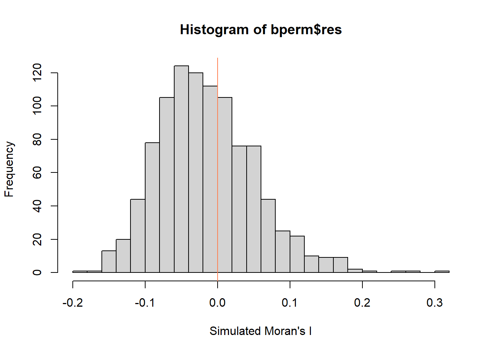
Question: What statistical observation can you draw from the output above?
The distribution looks close to normally distributed.
Challenge: Instead of using Base Graph to plot the values, plot the values by using ggplot2 package.
bperm_df <- as.data.frame(bperm$res)
ggplot(bperm_df, aes(bperm$res)) + geom_histogram(fill = "#ffb7b1", color = "black") + geom_vline(xintercept = 0)`stat_bin()` using `bins = 30`. Pick better value with `binwidth`.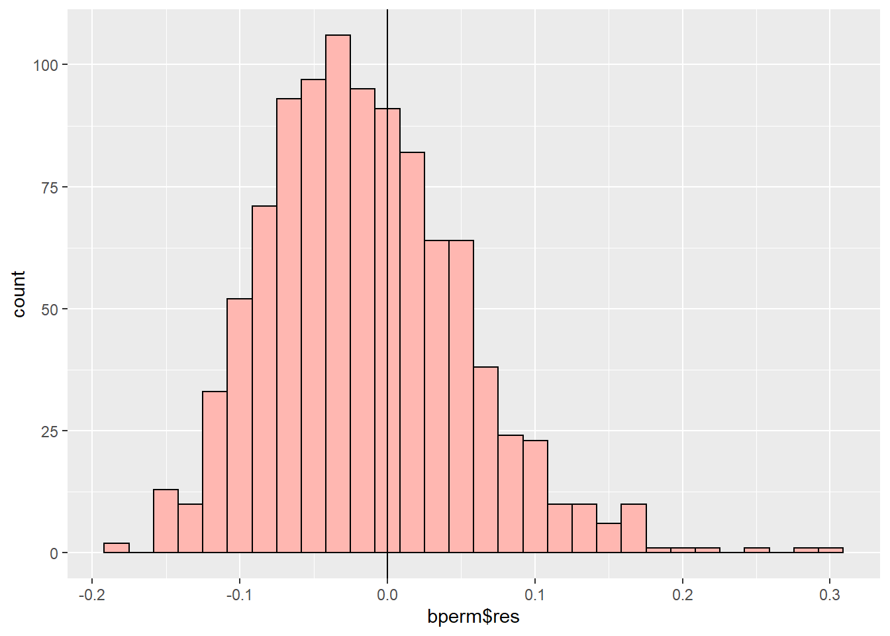
The package spdep provides the function geary.test() to perform this test.
Geary’s C is a statistic that measures how features differ from their immediate neighbors.
It’s defined as:
\[ C = \dfrac{(N-1)\displaystyle\sum^n_i\displaystyle\sum^n_j w_{ij}(x_i-x_j)^2}{2W\displaystyle\sum^n_i(x_i-\bar{x})^2} \]
geary.test(hunan$GDPPC, listw = rswm_q)
Geary C test under randomisation
data: hunan$GDPPC
weights: rswm_q
Geary C statistic standard deviate = 3.6108, p-value = 0.0001526
alternative hypothesis: Expectation greater than statistic
sample estimates:
Geary C statistic Expectation Variance
0.6907223 1.0000000 0.0073364 Question: What statistical conclusion can you draw from the output above?
Geary’s C statistic has a value of 0.6907223 which suggests that the observations tend to be similar.
set.seed(1234)
bperm=geary.mc(hunan$GDPPC, listw = rswm_q, nsim=999)
bperm
Monte-Carlo simulation of Geary C
data: hunan$GDPPC
weights: rswm_q
number of simulations + 1: 1000
statistic = 0.69072, observed rank = 1, p-value = 0.001
alternative hypothesis: greatermean(bperm$res[1:999])[1] 1.004402var(bperm$res[1:999])[1] 0.007436493summary(bperm$res[1:999]) Min. 1st Qu. Median Mean 3rd Qu. Max.
0.7142 0.9502 1.0052 1.0044 1.0595 1.2722 hist(bperm$res, freq=TRUE, breaks=20, xlab="Simulated Geary c")
abline(v=1, col="#FF7F50") 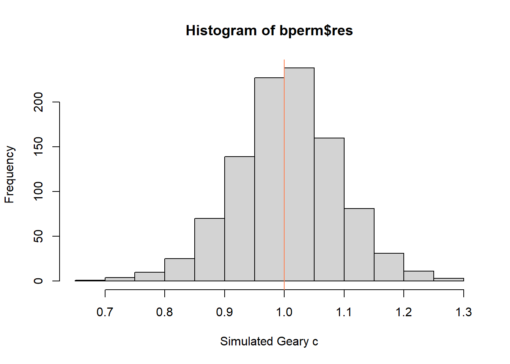
Question: What statistical conclusion can you draw from the output above?
The simulations seems to be normally distributed.
Spatial correlograms are great to examine patterns of spatial autocorrelation. They show how correlated pairs of spatial observations are when you increase the distance (lag) between them - they are plots of some index of autocorrelation (Moran’s I or Geary’s c) against distance.
Fortunately, the spdep package provides a function sp.correlogram(). Using the argument order we set the lag to 6.
MI_corr <- sp.correlogram(wm_q, hunan$GDPPC, order = 6, method = "I", style = "W")
plot(MI_corr)
print(MI_corr)Spatial correlogram for hunan$GDPPC
method: Moran's I
estimate expectation variance standard deviate Pr(I) two sided
1 (88) 0.3007500 -0.0114943 0.0043484 4.7351 2.189e-06 ***
2 (88) 0.2060084 -0.0114943 0.0020962 4.7505 2.029e-06 ***
3 (88) 0.0668273 -0.0114943 0.0014602 2.0496 0.040400 *
4 (88) 0.0299470 -0.0114943 0.0011717 1.2107 0.226015
5 (88) -0.1530471 -0.0114943 0.0012440 -4.0134 5.984e-05 ***
6 (88) -0.1187070 -0.0114943 0.0016791 -2.6164 0.008886 **
---
Signif. codes: 0 '***' 0.001 '**' 0.01 '*' 0.05 '.' 0.1 ' ' 1Question: What statistical observation can you draw from the plot above?
The graph suggest that as the distance increases, Moran’s I approaches -1, suggesting the values are becoming dissimilar.
The same function can be used for Geary’s C.
GC_corr <- sp.correlogram(wm_q, hunan$GDPPC, order = 6, method = "C", style = "W")
plot(GC_corr)
print(GC_corr)Spatial correlogram for hunan$GDPPC
method: Geary's C
estimate expectation variance standard deviate Pr(I) two sided
1 (88) 0.6907223 1.0000000 0.0073364 -3.6108 0.0003052 ***
2 (88) 0.7630197 1.0000000 0.0049126 -3.3811 0.0007220 ***
3 (88) 0.9397299 1.0000000 0.0049005 -0.8610 0.3892612
4 (88) 1.0098462 1.0000000 0.0039631 0.1564 0.8757128
5 (88) 1.2008204 1.0000000 0.0035568 3.3673 0.0007592 ***
6 (88) 1.0773386 1.0000000 0.0058042 1.0151 0.3100407
---
Signif. codes: 0 '***' 0.001 '**' 0.01 '*' 0.05 '.' 0.1 ' ' 1The function localmoran() of the spdep package computes \(I_i\) values, given a set of \(z_i\) values and a listw object providing neighbor weighting information for the polygon associated with the \(z_i\) values.
fips <- order(hunan$County)
localMI <- localmoran(hunan$GDPPC, rswm_q)
head(localMI) Ii E.Ii Var.Ii Z.Ii Pr(z != E(Ii))
1 -0.001468468 -2.815006e-05 4.723841e-04 -0.06626904 0.9471636
2 0.025878173 -6.061953e-04 1.016664e-02 0.26266425 0.7928094
3 -0.011987646 -5.366648e-03 1.133362e-01 -0.01966705 0.9843090
4 0.001022468 -2.404783e-07 5.105969e-06 0.45259801 0.6508382
5 0.014814881 -6.829362e-05 1.449949e-03 0.39085814 0.6959021
6 -0.038793829 -3.860263e-04 6.475559e-03 -0.47728835 0.6331568printCoefmat(data.frame(localMI[fips,], row.names=hunan$County[fips]), check.names=FALSE) Ii E.Ii Var.Ii Z.Ii Pr.z....E.Ii..
Anhua -2.2493e-02 -5.0048e-03 5.8235e-02 -7.2467e-02 0.9422
Anren -3.9932e-01 -7.0111e-03 7.0348e-02 -1.4791e+00 0.1391
Anxiang -1.4685e-03 -2.8150e-05 4.7238e-04 -6.6269e-02 0.9472
Baojing 3.4737e-01 -5.0089e-03 8.3636e-02 1.2185e+00 0.2230
Chaling 2.0559e-02 -9.6812e-04 2.7711e-02 1.2932e-01 0.8971
Changning -2.9868e-05 -9.0010e-09 1.5105e-07 -7.6828e-02 0.9388
Changsha 4.9022e+00 -2.1348e-01 2.3194e+00 3.3590e+00 0.0008
Chengbu 7.3725e-01 -1.0534e-02 2.2132e-01 1.5895e+00 0.1119
Chenxi 1.4544e-01 -2.8156e-03 4.7116e-02 6.8299e-01 0.4946
Cili 7.3176e-02 -1.6747e-03 4.7902e-02 3.4200e-01 0.7324
Dao 2.1420e-01 -2.0824e-03 4.4123e-02 1.0297e+00 0.3032
Dongan 1.5210e-01 -6.3485e-04 1.3471e-02 1.3159e+00 0.1882
Dongkou 5.2918e-01 -6.4461e-03 1.0748e-01 1.6338e+00 0.1023
Fenghuang 1.8013e-01 -6.2832e-03 1.3257e-01 5.1198e-01 0.6087
Guidong -5.9160e-01 -1.3086e-02 3.7003e-01 -9.5104e-01 0.3416
Guiyang 1.8240e-01 -3.6908e-03 3.2610e-02 1.0305e+00 0.3028
Guzhang 2.8466e-01 -8.5054e-03 1.4152e-01 7.7931e-01 0.4358
Hanshou 2.5878e-02 -6.0620e-04 1.0167e-02 2.6266e-01 0.7928
Hengdong 9.9964e-03 -4.9063e-04 6.7742e-03 1.2742e-01 0.8986
Hengnan 2.8064e-02 -3.2160e-04 3.7597e-03 4.6294e-01 0.6434
Hengshan -5.8201e-03 -3.0437e-05 5.1076e-04 -2.5618e-01 0.7978
Hengyang 6.2997e-02 -1.3046e-03 2.1865e-02 4.3486e-01 0.6637
Hongjiang 1.8790e-01 -2.3019e-03 3.1725e-02 1.0678e+00 0.2856
Huarong -1.5389e-02 -1.8667e-03 8.1030e-02 -4.7503e-02 0.9621
Huayuan 8.3772e-02 -8.5569e-04 2.4495e-02 5.4072e-01 0.5887
Huitong 2.5997e-01 -5.2447e-03 1.1077e-01 7.9685e-01 0.4255
Jiahe -1.2431e-01 -3.0550e-03 5.1111e-02 -5.3633e-01 0.5917
Jianghua 2.8651e-01 -3.8280e-03 8.0968e-02 1.0204e+00 0.3076
Jiangyong 2.4337e-01 -2.7082e-03 1.1746e-01 7.1800e-01 0.4728
Jingzhou 1.8270e-01 -8.5106e-04 2.4363e-02 1.1759e+00 0.2396
Jinshi -1.1988e-02 -5.3666e-03 1.1334e-01 -1.9667e-02 0.9843
Jishou -2.8680e-01 -2.6305e-03 4.4028e-02 -1.3543e+00 0.1756
Lanshan 6.3334e-02 -9.6365e-04 2.0441e-02 4.4972e-01 0.6529
Leiyang 1.1581e-02 -1.4948e-04 2.5082e-03 2.3422e-01 0.8148
Lengshuijiang -1.7903e+00 -8.2129e-02 2.1598e+00 -1.1623e+00 0.2451
Li 1.0225e-03 -2.4048e-07 5.1060e-06 4.5260e-01 0.6508
Lianyuan -1.4672e-01 -1.8983e-03 1.9145e-02 -1.0467e+00 0.2952
Liling 1.3774e+00 -1.5097e-02 4.2601e-01 2.1335e+00 0.0329
Linli 1.4815e-02 -6.8294e-05 1.4499e-03 3.9086e-01 0.6959
Linwu -2.4621e-03 -9.0703e-06 1.9258e-04 -1.7676e-01 0.8597
Linxiang 6.5904e-02 -2.9028e-03 2.5470e-01 1.3634e-01 0.8916
Liuyang 3.3688e+00 -7.7502e-02 1.5180e+00 2.7972e+00 0.0052
Longhui 8.0801e-01 -1.1377e-02 1.5538e-01 2.0787e+00 0.0376
Longshan 7.5663e-01 -1.1100e-02 3.1449e-01 1.3690e+00 0.1710
Luxi 1.8177e-01 -2.4855e-03 3.4249e-02 9.9561e-01 0.3194
Mayang 2.1852e-01 -5.8773e-03 9.8049e-02 7.1663e-01 0.4736
Miluo 1.8704e+00 -1.6927e-02 2.7925e-01 3.5715e+00 0.0004
Nan -9.5789e-03 -4.9497e-04 6.8341e-03 -1.0988e-01 0.9125
Ningxiang 1.5607e+00 -7.3878e-02 8.0012e-01 1.8274e+00 0.0676
Ningyuan 2.0910e-01 -7.0884e-03 8.2306e-02 7.5356e-01 0.4511
Pingjiang -9.8964e-01 -2.6457e-03 5.6027e-02 -4.1698e+00 0.0000
Qidong 1.1806e-01 -2.1207e-03 2.4747e-02 7.6396e-01 0.4449
Qiyang 6.1966e-02 -7.3374e-04 8.5743e-03 6.7712e-01 0.4983
Rucheng -3.6992e-01 -8.8999e-03 2.5272e-01 -7.1814e-01 0.4727
Sangzhi 2.5053e-01 -4.9470e-03 6.8000e-02 9.7972e-01 0.3272
Shaodong -3.2659e-02 -3.6592e-05 5.0546e-04 -1.4510e+00 0.1468
Shaoshan 2.1223e+00 -5.0227e-02 1.3668e+00 1.8583e+00 0.0631
Shaoyang 5.9499e-01 -1.1253e-02 1.3012e-01 1.6807e+00 0.0928
Shimen -3.8794e-02 -3.8603e-04 6.4756e-03 -4.7729e-01 0.6332
Shuangfeng 9.2835e-03 -2.2867e-03 3.1516e-02 6.5174e-02 0.9480
Shuangpai 8.0591e-02 -3.1366e-04 8.9838e-03 8.5358e-01 0.3933
Suining 3.7585e-01 -3.5933e-03 4.1870e-02 1.8544e+00 0.0637
Taojiang -2.5394e-01 -1.2395e-03 1.4477e-02 -2.1002e+00 0.0357
Taoyuan 1.4729e-02 -1.2039e-04 8.5103e-04 5.0903e-01 0.6107
Tongdao 4.6482e-01 -6.9870e-03 1.9879e-01 1.0582e+00 0.2900
Wangcheng 4.4220e+00 -1.1067e-01 1.3596e+00 3.8873e+00 0.0001
Wugang 7.1003e-01 -7.8144e-03 1.0710e-01 2.1935e+00 0.0283
Xiangtan 2.4530e-01 -3.6457e-04 3.2319e-03 4.3213e+00 0.0000
Xiangxiang 2.6271e-01 -1.2703e-03 2.1290e-02 1.8092e+00 0.0704
Xiangyin 5.4525e-01 -4.7442e-03 7.9236e-02 1.9539e+00 0.0507
Xinhua 1.1810e-01 -6.2649e-03 8.6001e-02 4.2409e-01 0.6715
Xinhuang 1.5725e-01 -4.1820e-03 3.6648e-01 2.6667e-01 0.7897
Xinning 6.8928e-01 -9.6674e-03 2.0328e-01 1.5502e+00 0.1211
Xinshao 5.7578e-02 -8.5932e-03 1.1769e-01 1.9289e-01 0.8470
Xintian -7.4050e-03 -5.1493e-03 1.0877e-01 -6.8395e-03 0.9945
Xupu 3.2406e-01 -5.7468e-03 5.7735e-02 1.3726e+00 0.1699
Yanling -6.9021e-02 -5.9211e-04 9.9306e-03 -6.8667e-01 0.4923
Yizhang -2.6844e-01 -2.2463e-03 4.7588e-02 -1.2202e+00 0.2224
Yongshun 6.3064e-01 -1.1350e-02 1.8830e-01 1.4795e+00 0.1390
Yongxing 4.3411e-01 -9.0735e-03 1.5088e-01 1.1409e+00 0.2539
You 7.8750e-02 -7.2728e-03 1.2116e-01 2.4714e-01 0.8048
Yuanjiang 2.0004e-04 -1.7760e-04 2.9798e-03 6.9181e-03 0.9945
Yuanling 8.7298e-03 -2.2981e-06 2.3221e-05 1.8121e+00 0.0700
Yueyang 4.1189e-02 -1.9768e-04 2.3113e-03 8.6085e-01 0.3893
Zhijiang 1.0476e-01 -7.8123e-04 1.3100e-02 9.2214e-01 0.3565
Zhongfang -2.2685e-01 -2.1455e-03 3.5927e-02 -1.1855e+00 0.2358
Zhuzhou 3.2864e-01 -5.2432e-04 7.2391e-03 3.8688e+00 0.0001
Zixing -7.6849e-01 -8.8210e-02 9.4057e-01 -7.0144e-01 0.4830hunan.localMI <- cbind(hunan,localMI) %>% rename(Pr.Ii = Pr.z....E.Ii..)
hunan.localMISimple feature collection with 88 features and 11 fields
Geometry type: POLYGON
Dimension: XY
Bounding box: xmin: 108.7831 ymin: 24.6342 xmax: 114.2544 ymax: 30.12812
Geodetic CRS: WGS 84
First 10 features:
NAME_2 ID_3 NAME_3 ENGTYPE_3 County GDPPC Ii
1 Changde 21098 Anxiang County Anxiang 23667 -0.001468468
2 Changde 21100 Hanshou County Hanshou 20981 0.025878173
3 Changde 21101 Jinshi County City Jinshi 34592 -0.011987646
4 Changde 21102 Li County Li 24473 0.001022468
5 Changde 21103 Linli County Linli 25554 0.014814881
6 Changde 21104 Shimen County Shimen 27137 -0.038793829
7 Changsha 21109 Liuyang County City Liuyang 63118 3.368821673
8 Changsha 21110 Ningxiang County Ningxiang 62202 1.560689600
9 Changsha 21111 Wangcheng County Wangcheng 70666 4.421958618
10 Chenzhou 21112 Anren County Anren 12761 -0.399322576
E.Ii Var.Ii Z.Ii Pr.Ii
1 -2.815006e-05 4.723841e-04 -0.06626904 0.9471636332
2 -6.061953e-04 1.016664e-02 0.26266425 0.7928093714
3 -5.366648e-03 1.133362e-01 -0.01966705 0.9843089778
4 -2.404783e-07 5.105969e-06 0.45259801 0.6508382339
5 -6.829362e-05 1.449949e-03 0.39085814 0.6959020959
6 -3.860263e-04 6.475559e-03 -0.47728835 0.6331568039
7 -7.750185e-02 1.518028e+00 2.79715225 0.0051555232
8 -7.387766e-02 8.001247e-01 1.82735933 0.0676457604
9 -1.106694e-01 1.359593e+00 3.88727819 0.0001013746
10 -7.011066e-03 7.034768e-02 -1.47912938 0.1391057404
geometry
1 POLYGON ((112.0625 29.75523...
2 POLYGON ((112.2288 29.11684...
3 POLYGON ((111.8927 29.6013,...
4 POLYGON ((111.3731 29.94649...
5 POLYGON ((111.6324 29.76288...
6 POLYGON ((110.8825 30.11675...
7 POLYGON ((113.9905 28.5682,...
8 POLYGON ((112.7181 28.38299...
9 POLYGON ((112.7914 28.52688...
10 POLYGON ((113.1757 26.82734...tm_shape(hunan.localMI) + tm_fill(col = "Ii", style = "pretty", palette = "RdPu", title = "local moran statistics") + tm_borders(alpha = 0.5) + tm_layout(legend.height = 0.5, legend.width = 0.4)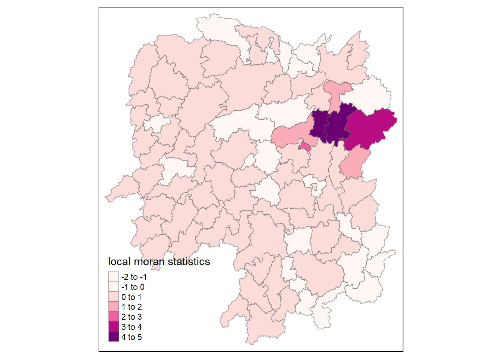
tm_shape(hunan.localMI) + tm_fill(col = "Pr.Ii", breaks=c(-Inf, 0.001, 0.01, 0.05, 0.1, Inf), palette="-Reds", title = "local Moran's I p-values") + tm_borders(alpha = 0.5) + tm_layout(legend.width = 0.4, legend.height = 0.5)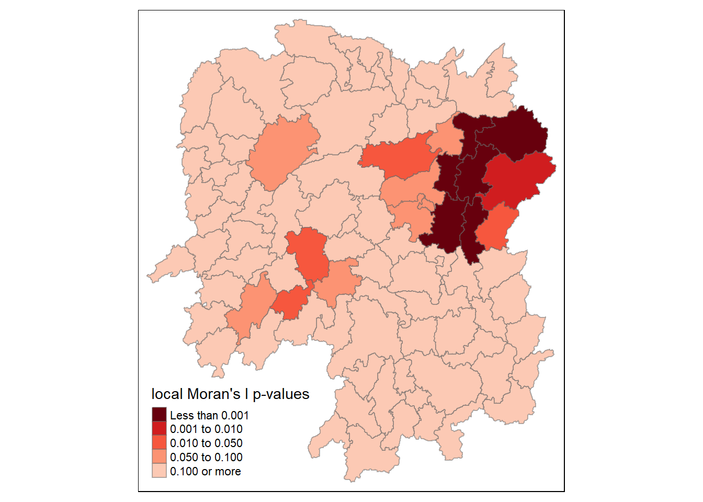
The choropleth shows there is evidence for both positive and negative \(l_i\) values. However, it is useful to consider the p-values for each of these values, as consider above.
localMI.map <- tm_shape(hunan.localMI) +
tm_fill(col = "Ii", style = "pretty", title = "local moran statistics", palette = "-PiYG") + tm_borders(alpha = 0.5) + tm_layout(legend.height = 0.35, legend.width = 0.4)
pvalue.map <- tm_shape(hunan.localMI) + tm_fill(col = "Pr.Ii", breaks=c(-Inf, 0.001, 0.01, 0.05, 0.1, Inf), palette="-Reds", title = "local Moran's I p-values") + tm_borders(alpha = 0.5) + tm_layout(legend.height = 0.35, legend.width = 0.4)
tmap_arrange(localMI.map, pvalue.map, asp=1, ncol=2)Variable(s) "Ii" contains positive and negative values, so midpoint is set to 0. Set midpoint = NA to show the full spectrum of the color palette.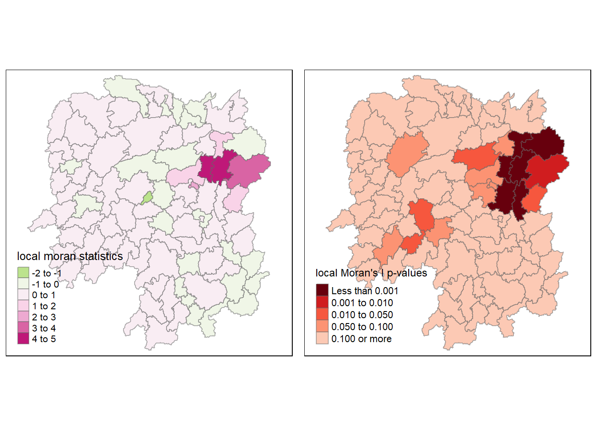
The LISA Cluster Map shows the significant locations color coded by type of spatial autocorrelation.
The code chunk below uses the function moran.plot to create a Moran scatterplot.
nci <- moran.plot(hunan$GDPPC, rswm_q, labels = as.character(hunan$County), xlab = "GDPPC 2012", ylab = "Spatially Lag GDPPC 2012")
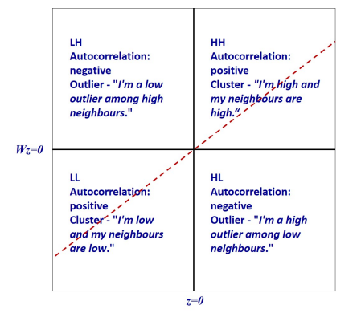
By using the interpretation figure above, we can determine the quadrant representations of the scatterplot.
hunan$Z.GDPPC <- scale(hunan$GDPPC) %>% as.vector FUNCTIONS UNLOCKED: scale() , as.vector
scale() is a function that centers and scales the columns of numeric matrix by subtracting the mean (omitting NAs) from the corresponding columns, and dividing the (centered) variable by their standard deviations.
as.vector converts a distributed matrix into a non-distributed vector.
These functions are used together to normalize or standaradize the data.
nci2 <- moran.plot(hunan$Z.GDPPC, rswm_q,
labels=as.character(hunan$County), xlab="z-GDPPC 2012", ylab="Spatially Lag z-GDPPC 2012")
quadrant <- vector(mode="numeric",length=nrow(localMI))
# Centering variable of interest
DV <- hunan$GDPPC - mean(hunan$GDPPC)
# Centering local Moran
C_mI <- localMI[,1] - mean(localMI[,1])
# Setting significance level
signif <- 0.05
# HH, LL, LH, HL Categories
quadrant[DV >0 & C_mI>0] <- 4
quadrant[DV <0 & C_mI<0] <- 2
quadrant[DV <0 & C_mI>0] <- 1
quadrant[DV >0 & C_mI<0] <- 3
# Non-significan Moran in category 0
quadrant[localMI[,5]>signif] <- 0hunan.localMI$quadrant <- quadrant
colors <- c("#ffffff", "#9f43c7", "#d2b1e0", "#fcd4d1", "#ff6969")
clusters <- c("insignificant", "low-low", "low-high", "high-low", "high-high")
tm_shape(hunan.localMI) +
tm_fill(col = "quadrant",
style = "cat",
palette = colors[c(sort(unique(quadrant)))+1],
labels = clusters[c(sort(unique(quadrant)))+1],
popup.vars = c("")) +
tm_view(set.zoom.limits = c(11,17)) +
tm_borders(alpha=0.5)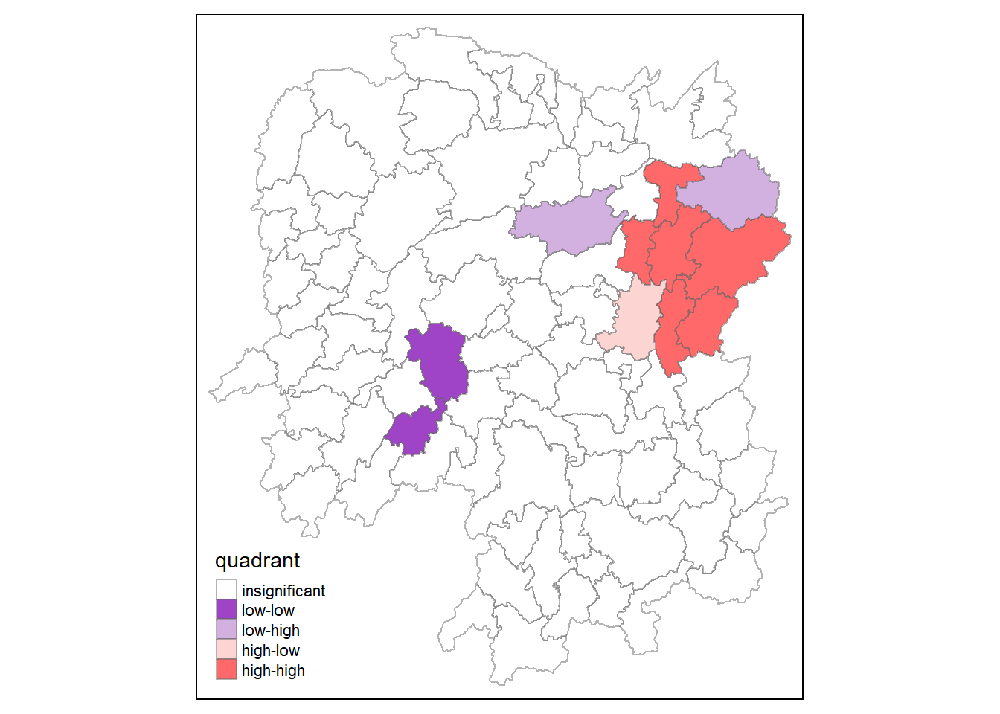
gdppc <- qtm(hunan, "GDPPC")
hunan.localMI$quadrant <- quadrant
colors <- c("#ffffff", "#9f43c7", "#d2b1e0", "#fcd4d1", "#ff6969")
clusters <- c("insignificant", "low-low", "low-high", "high-low", "high-high")
LISAmap <- tm_shape(hunan.localMI) +
tm_fill(col = "quadrant",
style = "cat",
palette = colors[c(sort(unique(quadrant)))+1],
labels = clusters[c(sort(unique(quadrant)))+1],
popup.vars = c("")) +
tm_view(set.zoom.limits = c(11,17)) +
tm_borders(alpha=0.5)
tmap_arrange(gdppc, LISAmap, asp=1, ncol=2)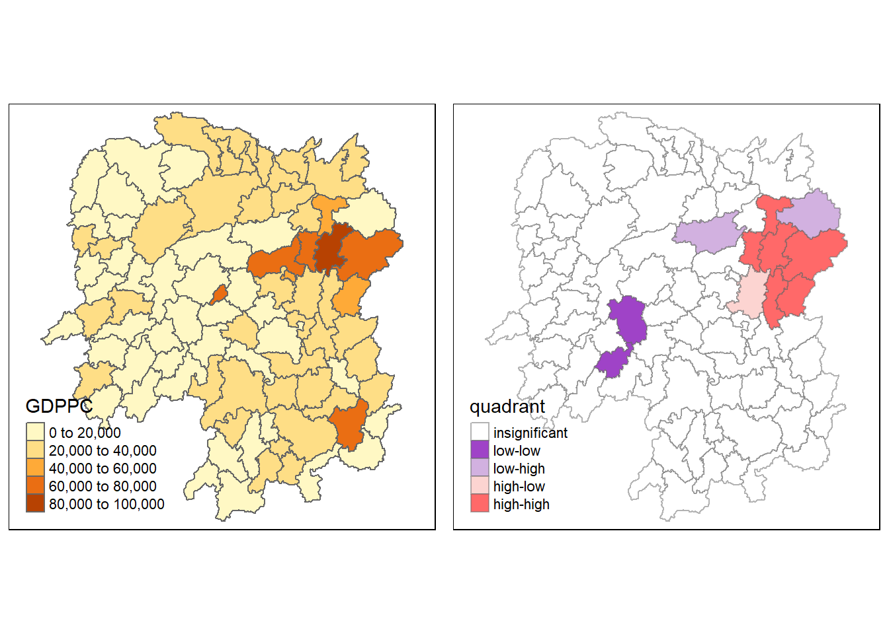
Beside detecting cluster and outliers, localised spatial statistics can be also used to detect hot spot and/or cold spot areas.
Getis and Ord’s G-statistics looks at neighbours within a defined proximity to identify where either high or low values clutser spatially. Here, statistically significant hot-spots are recognised as areas of high values where other areas within a neighborhood range also share high values too.
First, we need to define a new set of neighbors. While the spatial autocorrelation considered units which shared borders, for Getis-Ord we are defining neighbours based on distance.
There are two type of distance-based proximity matrix, they are:
fixed distance weight matrix; and
adaptive distance weight matrix
longitude <- map_dbl(hunan$geometry, ~st_centroid(.x)[[1]])
latitude <- map_dbl(hunan$geometry, ~st_centroid(.x)[[2]])
coords <- cbind(longitude, latitude)k1 <- knn2nb(knearneigh(coords))
k1dists <- unlist(nbdists(k1, coords, longlat = TRUE))
summary(k1dists) Min. 1st Qu. Median Mean 3rd Qu. Max.
24.79 32.57 38.01 39.07 44.52 61.79 wm_d62 <- dnearneigh(coords, 0, 62, longlat = TRUE)
wm_d62Neighbour list object:
Number of regions: 88
Number of nonzero links: 324
Percentage nonzero weights: 4.183884
Average number of links: 3.681818 wm62_lw <- nb2listw(wm_d62, style = "B")
summary(wm62_lw)Characteristics of weights list object:
Neighbour list object:
Number of regions: 88
Number of nonzero links: 324
Percentage nonzero weights: 4.183884
Average number of links: 3.681818
Link number distribution:
1 2 3 4 5 6
6 15 14 26 20 7
6 least connected regions:
6 15 30 32 56 65 with 1 link
7 most connected regions:
21 28 35 45 50 52 82 with 6 links
Weights style: B
Weights constants summary:
n nn S0 S1 S2
B 88 7744 324 648 5440knn <- knn2nb(knearneigh(coords, k=8))
knnNeighbour list object:
Number of regions: 88
Number of nonzero links: 704
Percentage nonzero weights: 9.090909
Average number of links: 8
Non-symmetric neighbours listknn_lw <- nb2listw(knn, style = 'B')
summary(knn_lw)Characteristics of weights list object:
Neighbour list object:
Number of regions: 88
Number of nonzero links: 704
Percentage nonzero weights: 9.090909
Average number of links: 8
Non-symmetric neighbours list
Link number distribution:
8
88
88 least connected regions:
1 2 3 4 5 6 7 8 9 10 11 12 13 14 15 16 17 18 19 20 21 22 23 24 25 26 27 28 29 30 31 32 33 34 35 36 37 38 39 40 41 42 43 44 45 46 47 48 49 50 51 52 53 54 55 56 57 58 59 60 61 62 63 64 65 66 67 68 69 70 71 72 73 74 75 76 77 78 79 80 81 82 83 84 85 86 87 88 with 8 links
88 most connected regions:
1 2 3 4 5 6 7 8 9 10 11 12 13 14 15 16 17 18 19 20 21 22 23 24 25 26 27 28 29 30 31 32 33 34 35 36 37 38 39 40 41 42 43 44 45 46 47 48 49 50 51 52 53 54 55 56 57 58 59 60 61 62 63 64 65 66 67 68 69 70 71 72 73 74 75 76 77 78 79 80 81 82 83 84 85 86 87 88 with 8 links
Weights style: B
Weights constants summary:
n nn S0 S1 S2
B 88 7744 704 1300 23014fips <- order(hunan$County)
gi.fixed <- localG(hunan$GDPPC, wm62_lw)
gi.fixed [1] 0.436075843 -0.265505650 -0.073033665 0.413017033 0.273070579
[6] -0.377510776 2.863898821 2.794350420 5.216125401 0.228236603
[11] 0.951035346 -0.536334231 0.176761556 1.195564020 -0.033020610
[16] 1.378081093 -0.585756761 -0.419680565 0.258805141 0.012056111
[21] -0.145716531 -0.027158687 -0.318615290 -0.748946051 -0.961700582
[26] -0.796851342 -1.033949773 -0.460979158 -0.885240161 -0.266671512
[31] -0.886168613 -0.855476971 -0.922143185 -1.162328599 0.735582222
[36] -0.003358489 -0.967459309 -1.259299080 -1.452256513 -1.540671121
[41] -1.395011407 -1.681505286 -1.314110709 -0.767944457 -0.192889342
[46] 2.720804542 1.809191360 -1.218469473 -0.511984469 -0.834546363
[51] -0.908179070 -1.541081516 -1.192199867 -1.075080164 -1.631075961
[56] -0.743472246 0.418842387 0.832943753 -0.710289083 -0.449718820
[61] -0.493238743 -1.083386776 0.042979051 0.008596093 0.136337469
[66] 2.203411744 2.690329952 4.453703219 -0.340842743 -0.129318589
[71] 0.737806634 -1.246912658 0.666667559 1.088613505 -0.985792573
[76] 1.233609606 -0.487196415 1.626174042 -1.060416797 0.425361422
[81] -0.837897118 -0.314565243 0.371456331 4.424392623 -0.109566928
[86] 1.364597995 -1.029658605 -0.718000620
attr(,"cluster")
[1] Low Low High High High High High High High Low Low High Low Low Low
[16] High High High High Low High High Low Low High Low Low Low Low Low
[31] Low Low Low High Low Low Low Low Low Low High Low Low Low Low
[46] High High Low Low Low Low High Low Low Low Low Low High Low Low
[61] Low Low Low High High High Low High Low Low High Low High High Low
[76] High Low Low Low Low Low Low High High Low High Low Low
Levels: Low High
attr(,"gstari")
[1] FALSE
attr(,"call")
localG(x = hunan$GDPPC, listw = wm62_lw)
attr(,"class")
[1] "localG"hunan.gi <- cbind(hunan, as.matrix(gi.fixed)) %>% rename(gstat_fixed = as.matrix.gi.fixed.)gdppc <- qtm(hunan, "GDPPC")
Gimap <-tm_shape(hunan.gi) +
tm_fill(col = "gstat_fixed", style = "pretty", palette="-PiYG", title = "local Gi") + tm_borders(alpha = 0.5) + tm_layout(legend.height = 0.35, legend.width = 0.4)
tmap_arrange(gdppc, Gimap, asp=1, ncol=2)Variable(s) "gstat_fixed" contains positive and negative values, so midpoint is set to 0. Set midpoint = NA to show the full spectrum of the color palette.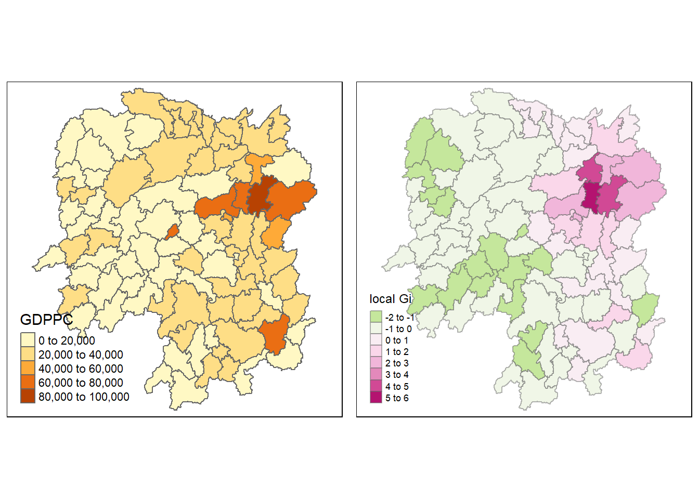
Question: What statistical observation can you draw from the Gi map above?
fips <- order(hunan$County)
gi.adaptive <- localG(hunan$GDPPC, knn_lw)
hunan.gi <- cbind(hunan, as.matrix(gi.adaptive)) %>% rename(gstat_adaptive = as.matrix.gi.adaptive.)gdppc<- qtm(hunan, "GDPPC")
Gimap <- tm_shape(hunan.gi) +
tm_fill(col = "gstat_adaptive", style = "pretty", palette="-PiYG", title = "local Gi") + tm_borders(alpha = 0.5) + tm_layout(legend.height = 0.35, legend.width = 0.4)
tmap_arrange(gdppc, Gimap, asp=1, ncol=2)Variable(s) "gstat_adaptive" contains positive and negative values, so midpoint is set to 0. Set midpoint = NA to show the full spectrum of the color palette.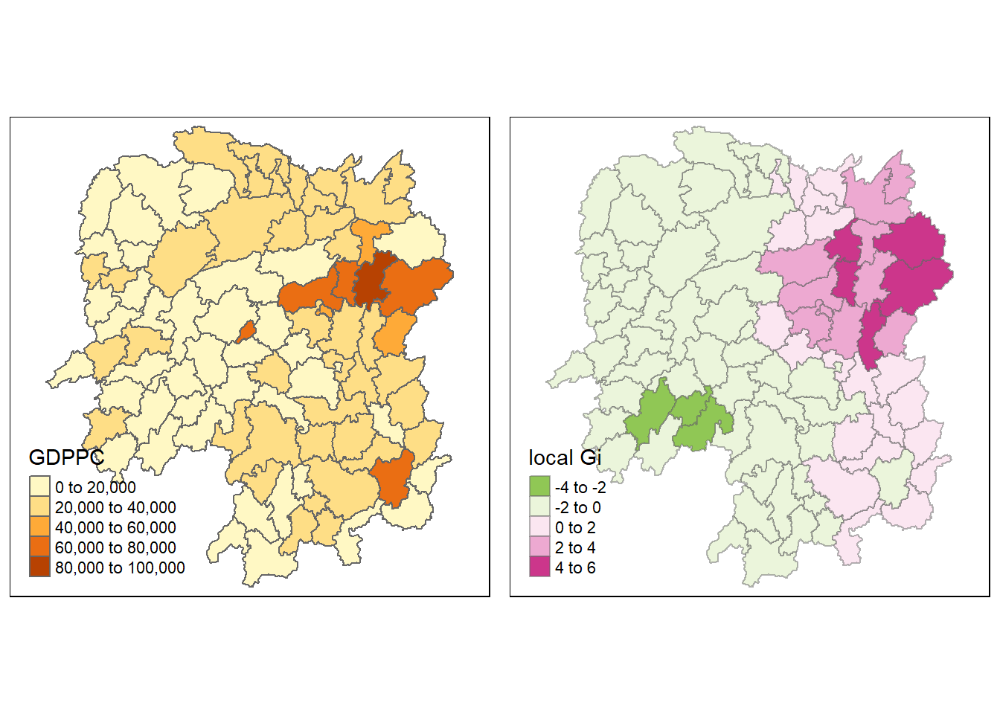
Question: What statistical observation can you draw from the Gi map above?
In comparison to the previous \(G_i\) graph using the fixed distance weights, the \(G_i\) graph with the adaptive distance weights is more convincing spatially in a sense that the cold and hot spots are grouped together. The \(G_i\) colors are gradually (or seemingly in a gradient manner) changing by neighbor. There is one light green spot that is seemingly out of place between light pinks.